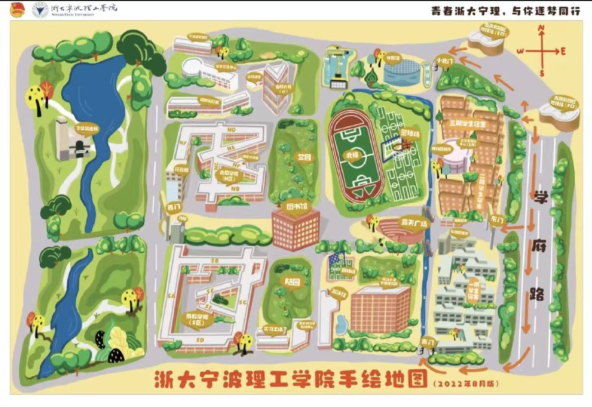

优先买到「宁波站」
到达宁波站后，站内换乘宁波轨道交通 4 号线，往东钱湖方向，到「南高教园区站」下，出地铁站即达学校。
学校官方网站：www.nbt.edu.cn
扫码添加学长微信，可拉新生群。网站出现bug或一时搜不到的问题以及网站内容一些细致具体的事宜不懂的都可以询问。热情学长在线解答
校园示意图不是测绘图；交通方案按常用路线整理，实时班次、出口与迎新交通管制请以地图 App 和学校通知为准。

到达宁波站后，站内换乘宁波轨道交通 4 号线，往东钱湖方向，到「南高教园区站」下，出地铁站即达学校。
机场乘地铁 2 号线到「宁波火车站」，换乘 4 号线往东钱湖方向，到「南高教园区站」下。行李多建议机场直接打车。
无论从市区、火车站还是机场转来，最终都可以把目的地设为「南高教园区站 / 浙大宁波理工学院」。出站后按地图步行导航。
目的地输入「浙大宁波理工学院」或「浙江省宁波市鄞州区钱湖南路 1 号」。开学报到日可能交通管制，家长车辆是否入校以当年通知为准。
按宿舍片区与房型浏览。照片与配置结合在校生经验整理。
预览 PDF 用来快速浏览；若学校原附件是 Word、Excel、Zip 或 PDF，会以官方附件入口保留。需要验证码的附件请按学校页面提示下载。
答案会随学年更新；经验类内容请结合自身学院判断。
从奶茶、外卖到周末逛街，把生活半径慢慢补全。
食堂 · 奶茶 · 外卖
商圈 · 娱乐 · 城市交通
社团 · 兼职 · 考证